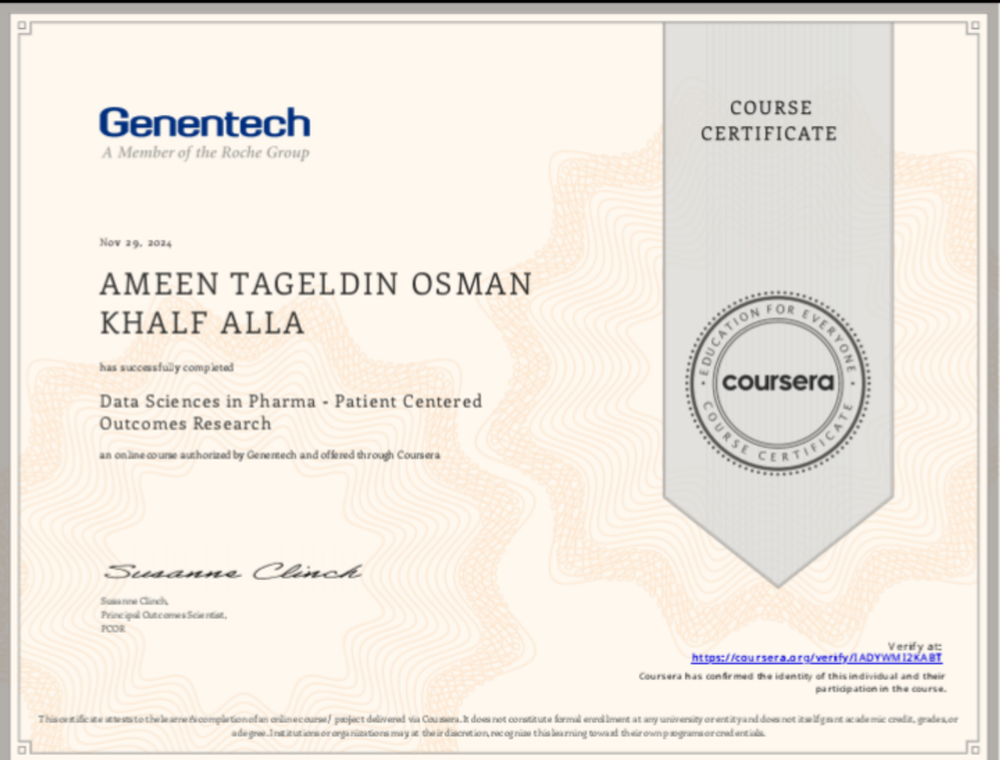

المحتوى الصيدلاني
تبسيط المعلومات المتعلقة بالأدوية والمفاهيم الصيدلانية بلغة سهلة وواضحة.
←محتوى صيدلاني مبسّط يساعدك على فهم الأدوية والمعلومات الصحية بطريقة واضحة وموثوقة.

محتوى واضح وتصميم منظم يساعد على إيصال المعلومة بصورة أفضل.
تبسيط المعلومات المتعلقة بالأدوية والمفاهيم الصيدلانية بلغة سهلة وواضحة.
←إعداد محتوى توعوي يساعد الناس على فهم المعلومات الصحية بصورة أفضل.
←تنسيق المعلومات الصحية في تصاميم بصرية مرتبة وسهلة القراءة.
←أنا أمين تاج الدين عثمان، مهتم بمجال الصيدلة وصناعة المحتوى الصحي، وأسعى من خلال Amino Cure إلى تقديم المعلومات الطبية والصيدلانية بطريقة بسيطة وواضحة وقريبة من الناس.
أؤمن أن المعلومة الصحية الصحيحة، لما تصل بصورة سهلة، بتساعد الناس على فهم صحتهم والتعامل مع أدويتهم بوعي أكبر.
نماذج من الأعمال والمشاريع التي أعمل عليها في صناعة المحتوى الصحي.
سنضيف صور الأعمال وروابطها بعد تجهيزها.
شهاداتي ودوراتي التعليمية مع روابط التحقق المتاحة.

إجابات مختصرة عن المحتوى والخدمات وطرق التعاون.
أقدّم محتوى صيدلانيًا وتثقيفًا صحيًا مبسّطًا، إضافة إلى تصميم منشورات وصور تساعد على توصيل المعلومة بوضوح.
لا، المحتوى للتثقيف العام فقط، ولا يغني عن استشارة الطبيب أو الصيدلي، خاصة عند اختيار دواء أو تعديل جرعته.
يمكنك التواصل معي عبر وسائل التواصل الموجودة في قسم «تواصل معي»، مع توضيح نوع الخدمة أو فكرة التعاون.
نعم، يمكن مناقشة فكرة المحتوى والهدف منه وتحديد التفاصيل المناسبة قبل بدء العمل.
تختلف المدة حسب نوع العمل وحجمه، ويتم الاتفاق على موعد التسليم بعد تحديد التفاصيل.
للتواصل والاستفسارات والتعاون في مشاريع المحتوى الصيدلاني والصحي.
تنويه طبي: المحتوى للتثقيف الصحي فقط، ولا يُغني عن استشارة الطبيب أو الصيدلي، ولا يُعدّ بديلًا عن التشخيص أو العلاج.